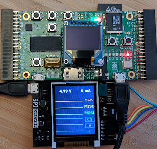
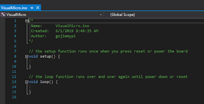
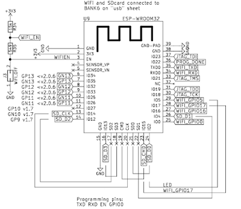

This blog is a walk-though using the Visual Micro Arduino IDE in Visual Studio 2019 to program the ESP32 on the Radiona ULX3S. For more information on the ULX3S see my Day 1 intro, Using ujprog on WSL or MinGW, and Notes on ulx3s FPGA: Yosys, Verilog, VHDL, vhdl2vl (Convert VHDL to Verilog). Here's the ULX3S with the SPIDriver
.
|

|
| ULX3S with SPIDriver board |
There are some brief online instructions for manually installing Visual Micro, or you can follow along here, using the VisualMicro example for the ULX3Son GitHub
:
In
Visual Studio 2019
, click on Extensions - Manage Extensions.
Select "online" in the left pane and type "Arduino" in the search box:
Note the 5 stars reviews from hundreds of users. Yes, it is a very cool extension. :)
Next, click on the "Download" button. You'll need to restart Visual Studio 2019.
Be sure to wait for the VSIX installer screen! The first time I did this, I simply launched Visual Studio right away, and the Visual Micro Extension was no where to be found! Before launching Visual Studio, you should see this screen:
Then after a warning about system changes, this prompt:
Click the "Modify" button to continue. Upon completion, there should be a message "Modifications Complete"
When Visual Studio is next launched, click on "Create a new project"
There are many project types, so type "Arduino" in the search box:
Select "Arduino Project" and click the Next button.
Give the project a name, and a location to store it. In this case, I am saving it in my
ULX3S examples fork directory, to create a pull request to the official ULX3S Examples
.
After clicking the "Create" button, a familiar Arduino-style code template is created, with the setup() and loop() functions:

So that's the easy part. Now things get more interesting. The ESP32 on the ULX3S sits behind the FPGA chip. This means the only way to program the ESP32, is to have code on the ULX3S that performs a "pass through" function of external physical pins to the ESP32 pins
through
the FPGA.
|

|
|
schematic showing the ESP32 to FPGA connections
|
Fortunately, the ULX3S typically ships with the pass-though FPGA app already loaded. If not, the
FPGA source code can be found here. Note there are three different versions: the Diamond VHDL that emard wrote, a Diamond Verilog that I converted from emard's VHDL, and finally an Open Source Verilog version that uses yosys and nextpnr
. (hm, it looks like from the most recent comments I need to get the open source version working properly - I'll need to look into that)
If you are not ready to jump into the synthesis of FPGA bit files yet, you can use the passthru image file
passthru_ulx3s_v20_12k.bit and load it onto the ESP32 using the ujprog tool
. If you don't feel like building your own, there's a copy of both the bin directory.
{% include code_header.html %}
if NOT EXIST c:\workspace mkdir c:\workspace
git clone https://github.com/gojimmypi/ulx3s-examples.git c:\workspace\ulx3s-examples
c:
cd \workspace\ulx3s-examples\VisualMicro\bin\
.\ujprog.exe passthru.bit
If "Cannot find JTAG cable" is encountered, remember that WSL is still not supporting native USB drivers. If you are using the Windows executable version and you see that message try
changing the ULX3S drivers back to FTDI
particularly if you don't see your ULX3S in the Ports (COM & LPT) container in device manager. WSL can be finicky, and even have different results whether executing from a Linux directory or DOS (e.g. /mnt/c/). And yes, native Windows executable files can be launched from WSL! cool.
Visual Studio seemed to have defaulted to all the correct values for me (I'm note sure if perhaps it remembered values from Visual Studio 2017) Here they are for reference:
Of particular interest is ensuring the proper COM port is selected, near the bottom of the settings list. I didn't see the actual ESP32 device listed (WROOM-32), so I used the ESP32 Dev Module setting.
Once the pass through FPGA binary has been successfully uploaded, the simplest way to compile and upload the Arduino code via Visual Micro is to press F5 or the big green "start" button! That's it!
Note that one of the amazing things about the Visual Micro IDE, is they have implemented a debugger that does not require a hardware JTAG device! Here's my ULX3S ESP32 paused at a breakpoint:
Now onto that SPI Driver! Stay tuned for more....
Copyright (c) gojimmypi all rights reserved. Blogger Image Move Cleaned: 5/3/2021 1:35:54 PM
{kind=link}
{kind=link}
{kind=link}
{kind=link}
{kind=link}
{kind=link}
{kind=link}
{kind=link}

{kind=link}
{kind=link}
{kind=link}